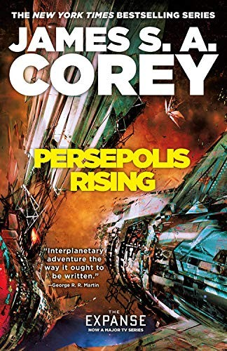

I design products that make difficult things feel understandable.
I'm a full-stack product designer working across product, systems, and visual design. I’m most interested in software with genuine constraints: complex workflows, high-stakes contexts, shifting technology, and teams trying to turn an emerging idea into a useful product.
Most recently, I worked with the Department of Defense’s Chief Digital and AI Office (Defense Digital Service), supporting modernization initiatives in high-security environments.
Earlier work spans startups, enterprise, government, and commerce. Across every setting, I bring a practical combination of product thinking, visual clarity, systems design, and hands-on making.
I’m based in Los Angeles and increasingly build prototypes and tools with AI-assisted development as part of the design process.
Focus
01 products · Product strategy · Complex workflows · Design systems · Visual direction · AI-assisted prototyping
Experience
Library

Persepolis Rising Abaddon's Gate
Abaddon's Gate
 Caliban's War
Caliban's War
 Leviathan Wakes
Leviathan Wakes
 The Name of the Wind
The Name of the Wind
 Mistborn Trilogy
Mistborn Trilogy
 Blood Meridian
Blood Meridian
 Neuromancer
Neuromancer
 Do Androids Dream of Electric Sheep?
Do Androids Dream of Electric Sheep?
 The Spy Who Came in from the Cold
The Spy Who Came in from the Cold
 The Moon Is a Harsh Mistress
The Moon Is a Harsh Mistress
 Redwall
Redwall
 The Lord of the Rings
The Lord of the Rings
 The Hobbit
The Hobbit
 The Odyssey
The Odyssey
 The Iliad
The Iliad
 The Waste Land
The Waste Land
 The Big Sleep
The Big Sleep
 Huckleberry Finn
Huckleberry Finn
 The Tao of Pooh
The Tao of Pooh
Github Commits
Loading recent contributions…